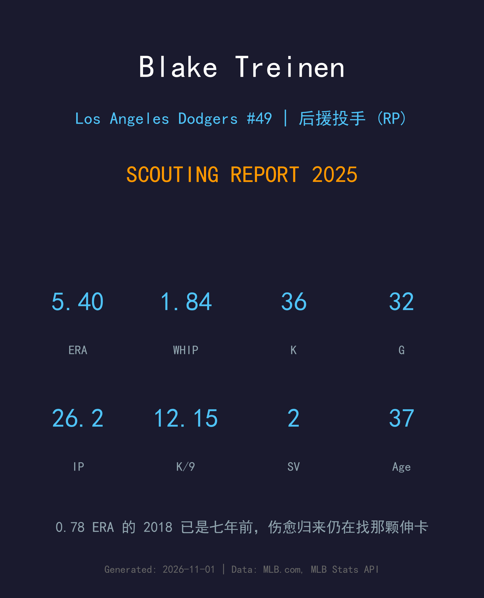
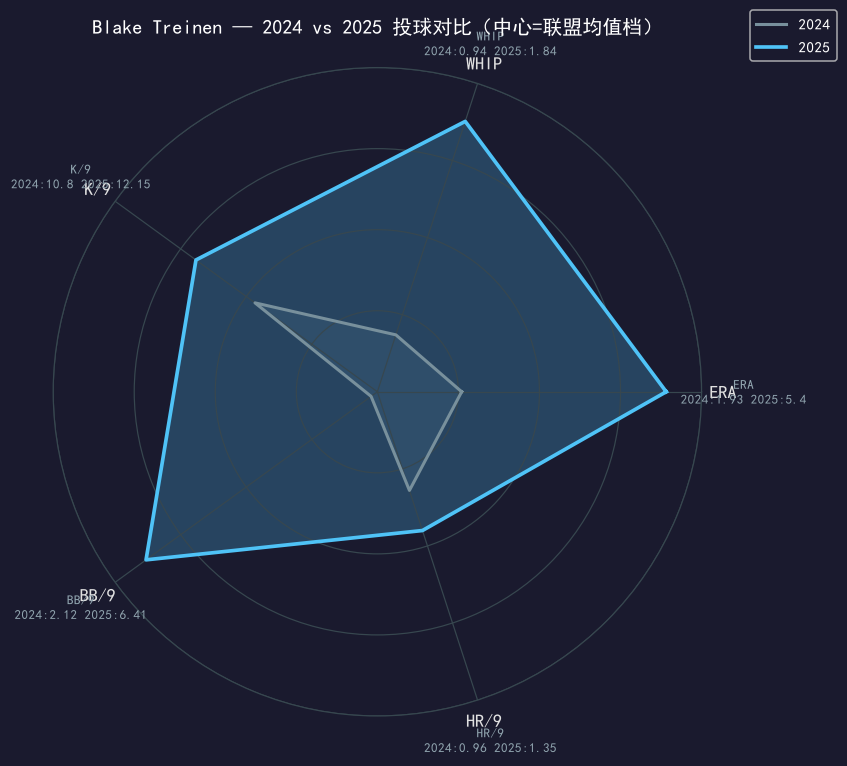
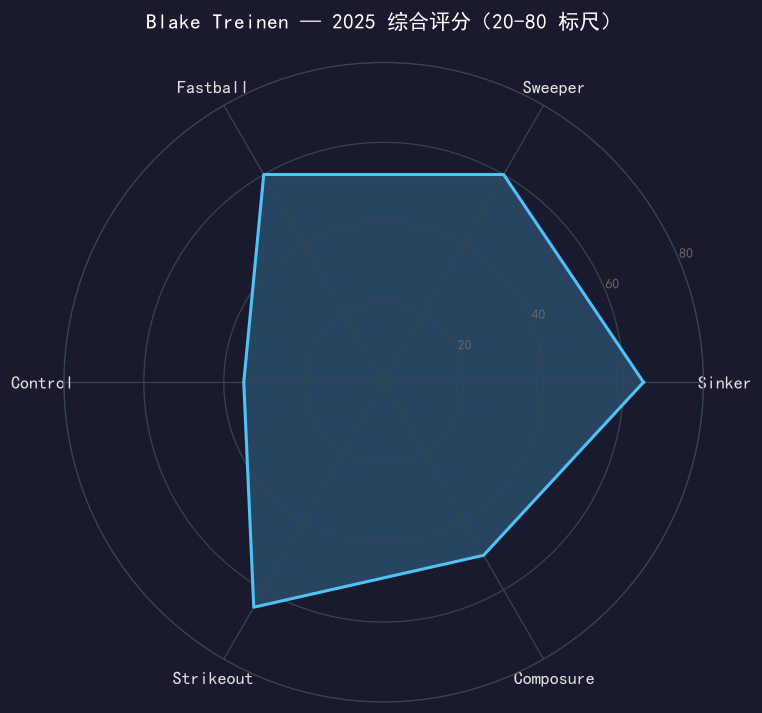

Los Angeles Dodgers #49 | 后援投手 | 右投 | 0.78 ERA 的 2018 已是七年前，伤愈归来仍在找那颗伸卡

Blake Treinen 的 2025 年是一个老兵的最后一章还是中场休息，现在没人知道。4 月 19 日前臂紧绷进入伤兵名单，直接躺到 7 月 27 日；复出后 32 场、5.40 自责分率、1.84 WHIP、BB/9 6.41——但同期 K/9 12.15 却是生涯最高的一档。
这组矛盾的数据是他的全部故事：横扫滑球（47.2% 使用率）和 95.9 mph 伸卡依然能制造大量挥空，球威没有死；死的是控球和落点——30 支安打加 19 次保送挤进 26.2 局，WHIP 1.84 意味着每一局都在有人上垒的危机里开工。2 胜 7 败、5 次救援机会吹掉 3 次，是他生涯第一次把「第九局」的钥匙交了出去。
从 2025 年 11 月的视角看，Treinen 站在生涯的十字路口：2024 年那个 1.93 自责分率的他只隔了一个健康的休赛期，而 2018 年那个 0.78、38 救援的赛扬级怪物已经隔了整整七年。他的下一站在哪，取决于哪支球队相信前者、原谅后者。
运动家时代的巅峰：68 场、0.78 自责分率、38 次救援成功——0.78 是 MLB 历史上单季 50 局以上投手第四低的自责分率，他入选了全明星，并在赛扬奖票选中名列第六。
随道奇拿下世界大赛冠军——缩短赛季的 27 场出赛是夺冠牛棚的重要一环，这也是他生涯第一枚冠军戒指。
2021 年 1.99 自责分率、2022 年肩膀手术只投 5 场、2023 年整季报销、2024 年强势复出投出 1.93——四年里他完成了从手术台回到精英牛棚的完整循环。

| 赛季 | G | W-L | ERA | WHIP | IP | SO | BB | K/9 | BB/9 |
|---|---|---|---|---|---|---|---|---|---|
| 2024（伤愈复出） | 50 | 7-3 | 1.93 | 0.94 | 46.2 | 56 | 11 | 10.80 | 2.12 |
| 2025 | 32 | 2-7 | 5.40 | 1.84 | 26.2 | 36 | 19 | 12.15 | 6.41 |
这是一张罕见的「两条线反向冲刺」的雷达图：三振率不降反升（10.80→12.15），保送率却翻了三倍（2.12→6.41）。球威与控球之间的剪刀差，通常只有一个解释——身体还记得怎么投那颗滑球，但重复精确出手的稳定性被伤病和时间偷走了。4 月的前臂紧绷让他错过整整三个月，复出后等于从春训直接跳进了赛季冲刺段。
2025 赛季真实配球数据（MLB Stats API pitchArsenal）：
使用率逼近一半的绝对主力，大幅横移是他制造 12.15 K/9 的引擎——球威依旧是大联盟顶级的中继武器。
招牌重伸卡，曾经 2018 年 0.78 自责分率的基石；如今速差还在、尾劲略减，更多是配球而非杀手锏。
与伸卡 interchangeable 的上窜版本，用来抬升打者视线、为滑球铺垫。
细小横移的过渡球种，破坏棒头与内角抢好球的工具。
12.15 的 K/9 是他生涯第二高的数字，横扫滑球的 Whiff 能力依然站在大联盟前列——这排除了「东西没了」的衰退剧本。真正崩塌的是控球：BB/9 从 2.12 跳到 6.41，意味着他每投不到两局就有一次保送。对救援投手而言，这种 profile 是致命的：第九局没有容错空间，而他 2025 年每一次登板平均要面对 1.84 个垒上跑者。
4 月 19 日进入伤兵名单、5 月 1 日转入 60 天伤兵名单、7 月才开始复健赛——前臂问题对靠伸卡吃饭的投手从来都是黄灯。复出后投球机制尚未完全校准，三振多、保送也多的形状正是「出手点漂移」的典型症状。2024 年 1.93 与 2025 年 5.40 之间隔的不是能力，而是三个完整月的投球积累。
2025 年他交出了生涯第一次「负战绩救援者」赛季（2-7、3 次救援失败），教练组在季后赛已把他定位为第六、七局的中继而非终结者。对一位 37 岁老将来说，从「终结者候选人」退到「专职中继」不是失败，而是延长生涯的标准路径——问题只在于他能否把 WHIP 压回 1.3 以下，让教练组敢于在分数接近时继续叫他的名字。

球威犹在的老将中继，健康与控球定上下限
C+~B- 级 / veteran 中继（健康变量）
道奇 2025 季后赛夺冠之路：外卡 2-0 红人 → NLDS 3-1 费城人 → NLCS 4-0 酿酒人 → 世界大赛 4-3 多伦多蓝鸟。
Treinen 季后赛出赛 10 场、自责分率 6.75——一组被两局灾难掩盖了八局好投的数字。他两次在没抓到任何出局数的情况下失分（NLDS 第二场 0 局 2 分、世界大赛第三场 0.1 局 1 分），但其余 8 场全部零失分，包括在酿酒人主场的 NLCS 第一场，于 2-1 的分数下投出 1 局 2 三振的干净第九局、拿下救援成功——那是他 2025 年最重要的一次登板。
Treinen 的 2026 年取决于两件事：前臂是否完全痊愈，以及他是否接受「专职中继」的新角色。如果答案是肯定的，2024 年 1.93 的那个他并非不可复制；如果控球找不回来，5.40 的 2025 就是生涯的终点预告。
理想剧本：完整春训校准机制，回到 1.5 WHIP 以内的第七八局中继
现实基准：低合约量的 veteran 中继，按健康状态在名单内外徘徊
上行惊喜：滑球找回 2018 形状，重新摸到终结者讨论的边缘
Blake Treinen 来自堪萨斯州威奇托，2014 年在华盛顿国民登上大联盟。他的生涯前七年平淡无奇，直到 2017 年被交易到奥克兰运动家——2018 年，他投出了 MLB 历史上最伟大的后援赛季之一：68 场、0.78 自责分率、38 次救援，全明星与赛扬票选第六。那颗下坠凶猛的伸卡滑球组合，是当时全联盟最难对付的三颗球之一。
2019 年之后是漫长的下坡与挣扎：2020 年随道奇夺冠，2021 年回到 1.99 的精英水准，随后是 2022 年的肩膀手术、2023 年的整季报销。2024 年，35 岁的他完成了体育史上最难得的剧本之一：复出即巅峰，46.2 局 1.93 自责分率。所有人都以为故事会在这里圆满，但 2025 年的前臂伤病和 5.40 的自责分率提醒所有人：老将的每一季都是借来的。
2025 年 11 月的 Blake Treinen 站在生涯的十字路口。他的手臂里还藏着 2018 年的影子，但日历上写着 37 岁。无论下一站是哪，他都已经写好了自己的传奇：一个从 0.78 到手术台再回来的投手，本就不欠棒球任何东西。